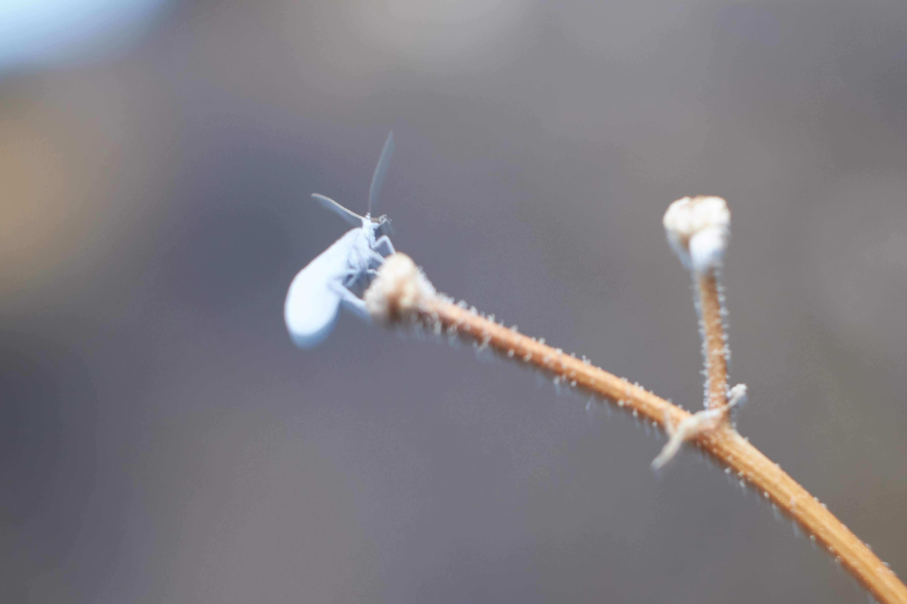

Caracoblog
Tierras heladas
Suaves y fríos aires de la mañana invernal atañen a las figuras que se forman en este bosque cordillerano. Si achicas los ojos para ver los detalles entonces el sol, que irá apareciendo sobre la cordillera, te ayudará a enfocar lo que quieras ver. Un Coniopterígido! si quieres. En este relato, te contaré sobre como conocí a uno de estos coniopterígidos.
Llebaba un tiempo queriendo fabricar alas bioinspiradas en estos minúsculos bichitos parientes de las crisopas, en otro tiempo abundaban si; pero hoy en día son muy dificiles de encontrar pues quedan muy pocos. Era importante conocer a uno para poder grabar sus alas y su forma de volar, sólo así podré fabricar los implantes con la más alta calidad. Aquella mañana, después de tanta búsqueda, después de tantos viajes, había por fin encontrado a uno. El bichito estaba muy metidx en lo suyo, entre vuelos buscando comida y entre descansos sobre ramas dormidas, pronto se dió cuenta que la estaba observando, a lo mejor se asustó porque comenzó a alejarse un poco, así que sigilosamente me acerqué de nuevo repitiendo el ciclo una y otra vez hasta que finalmente y posándose en una ramita seca me dice:
—bges exzrzzo, zmngzn zmmazx muz paba pob mzuí be da czenzm ze nzmeszrm prbtzmesnczm...
Ajá, no le entendía nada! por lo visto las antenas que llevaba puestas eran demasiado grandes para captar las minúsculas notas de comunicación de estos neurópteros, pero no se preocupen! para estos casos he fabricado unos dispositivos que se conectan al celular y que despliegan unas mini antenas que se enganchan ahí para captar de manera amplificada los mensajes de estos bichos, además con el celular resulta más facil apuntarles y una vez recibidos los datos, se hace un envío automático a los receptores de mis implantes originales. Ahora si, con las antenas conectadas le vuelvo a preguntar y me responde:
—ejeemm! Eres extraño, además ningún humanx que pasa por aquí se da cuenta de nuestra presencia. Pensaba que simplemente tenían mala vista, a veces paso muy enfrente de sus ojos y ni se dan cuenta. —No es así —le dije—, bueno al menos yo puedo verte e incluso puedo seguir tu vuelo. Entonces preparo mi cámara y le digo ¿Te puedo sacar una foto o grabar un poco tu vuelo? —Ahh! ya sé quien eres! —dice interrumpiéndome—, las crisopas me han contado sobre tí. Le pregunté que cosas le habían contado, pero en vez de responderme prepara sus alas diciéndome: —mmm mejor zmmmzmzm juguemoszzmzm a la pinta! Zmzm!
Emprende su vuelo y a lo lejos (lejos para el bicho) me grita: —Aver si me pillas jiji! zmzmzm! ( si existiese una letra más pequeña que la letra "minúscula" la preferiría para escribir su zumbido)
Vuela lentito, pero ante su pálida presencia descubro la dificultad de su juego. El sol aun no sale del todo y poquitos son los rayos que alcanzan a iluminar los romerillos y que me ayudan como pueden a revelar su ubicación, aunque a ratos lo pierda de vista. —Por aquiii!—, me grita a lo lejos.
Su voz tan delicada y transparente se nota bastante en un lugar como este, me volteo y ahí estaba alejandose de mi, con la camara en la mano voy tras el coniopterígido mientras pasa la hierba y evito las ramas con espinas, luego de ya veinte arbustos, consigo pillarle, me acerco un poco más y... —Pinta!, —le digo, sacándole rápidamente una foto—. —Buen intento humano!, nada mal! —me dijo mientras me acercaba a la cámara para revisar la fotografía que había logrado sacar. —ya ahora, juguemos a la escondida!—, y en menos de un segundo, el bichito ya no estaba por ningun lado y la fotografía había quedado borrosa. Lo seguí buscando por todo el bosque pero había desaparecido.
y Así fué como conocí al coniopterígido. No pude grabar su vuelo pero no se preocupen! yo me dedico a esto de los implantes asi que seguiré buscando a este bichito hasta que me deje grabarlo! Si ven alguno, avisenme! (aqui les entrego mi tarjeta)
Last updated 3 mins ago